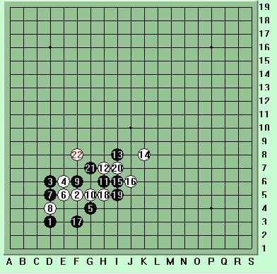

黑云压城城欲摧 甲光向日金鳞开 -连接与控制的博弈
作者：棋意

2013年暑假杯家族争霸赛第三轮
圣棋盟tingmeng（执黑）对 圣鑫棋社huoshan（执白）
棋谱如下： （黑胜）
(图1)
炎炎夏日也挡不住棋手的比赛热情，圣鑫一台huoshan是开出租车，在时间只剩余20分钟时及时赶到参赛。
乍一看棋谱,是个很奇怪的横向对局。打谱后发现他们这次的开局也是常见的一种变化 。
圣鑫棋社huoshan一直都是下有禁手，下棋比较喜欢猜对手 下一手走哪里，对下一手交换，他表示还不熟。
（图2）
实战中他对黑棋的1和3他做出自己作战部署：4手贴着3手， 不让黑棋往大面积发展，同时做个活2 出来 ，判断5手会下挡， 自己6手形成个团角，判断出黑7手 会防6手 和2手这条线 ，对手自己成一个活三 …单从开局来说我认为黑棋好一点，黑5也是我平时喜欢的下法，白棋2、4在一条线上，有点直接显得不是很好，4和6在一起感觉有点紧凑笨拙 。在开局空间缺乏的局面下，获取外势是取胜的必要条件。
按照大部分情况看 ，马步应该强一些 ，白4我也许会走在d4直接防死左下角 ，像参考图（3）这个4，失去了外势压迫。但直接消除了黑棋在左下角的攻势，省得以后麻烦 。因为它是防了一手，没强抢外势 ，黑棋比较从容，白棋也可以轻松一点。有点与人方便，与已方便的味道 。
参考图3）
现在还有一种流行白4走3右上如参考图（4），这个白4强抢外势，但也给了黑棋一些强攻的空间。
（参考图4）
对于黑7点的选择，如果取外势的话，黑7我可能会下点E7见参考图（5），这样白棋就已经失去了外势，里面又攻不出棋来。白棋有可能就输了，因为白棋的发展效率比较低了。
（参考图5）
现回到实战中来看（图6），白12是一个好点，14走在d7，它盖住黑的一个眠2，可以和E线上4,6还有6,2,10这个眠3发展连接左右呼应， 而黑13,15积极应对，八卦飞罩，将白棋笼罩在棋盘的内侧。
（图6）
对于d7这个14我自个感觉有点积极了，假如 白14走在k8 这个位置，参考图（7）可以说控制了右下面的空间，让黑棋这时是有力发不出 。
(参考图7)
可以演变下图如此变化

（参考图7-1）
（参考图7-2）
实战见（图8）白20走B7是不想放弃下面白棋，赛后huoshan回顾一下表示再下20手也许会挑盖 13 ，19 ，不叫黑棋往上有发展 。
（图8）
这时候黑棋的想法就是下控制棋，让白棋左右碰壁。以不变应万变。
在黑棋层层包围之下，白棋选择突围是唯一的出路。下图几个点A,B,C都是可以考虑的
参考图9）
回到实战中白在黑35手后简单思考，果断选择了进攻,白36和14,20做了一活3，白38是含招和24.26.30.32作一手1级连攻。白40防住黑29和31这个活2，自己又形成一个活3。黑41也果断防在上面 点n6继续控制外势，这时候白42走在e9这个点想冲出黑的包围圈，话说42是个连接的好点，和18，36形成2个活2，以后也可以和下面斜线8,34有交集。但白棋却没有算到黑在下面41手后有个2级连攻胜…
（图10）
黑43发起总攻果断走在M7点，这个时候无论白44防在I7冲4，还是中间L7或者防在右边N7都处于败的地步了
图11）
黑45往下活3，白46下挡，黑51继续活3,黑53做一含招
（图12）
最后黑57一子双胜
（图13）
一手交换的特点主要就是双方互相争夺外势，在争夺的过程中考验双方的计算力、观察力、判断力、和大局观。以这些决定胜负。
总观全局这次白棋处于败的原因，是因为白棋42手脱先了。一味的追求连接，没有大局观和控制外势的意识，放弃对外势的经营。白开局变招，之后很快展开进攻，但并没能在角落里得手。在左侧向外转身时不慎失了先手，被黑棋在右侧2级连攻取胜，相对黑棋有一定控制外势的经验 ，黑胜这也是前面黑棋积攒的外势发挥的作用 。
只要是站在一手交换比赛的舞台上，参赛的棋手，无论胜负都是值得我们学习和尊重。
在这次学棋过程中发现棋手他们的快乐不是最后输赢结果，而是他们认为既然参赛了，就尽量做到最好。他们的快乐是在对弈过程中行兵布阵，斗智斗勇；是在对弈过程中发现自己点滴的进步，所感所悟。
@参考图